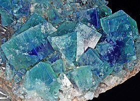
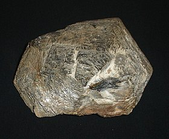

La escala de Mohs
| Dureza | Mineral |
|---|---|
| 1 |  |
| 2 |  |
| 3 |  |
| 4 |  |
| 5 |  |
| 6 |  |
| 7 |  |
| 8 |  |
| 9 |  |
| 10 |
Talco
El talco es un mineral de la clase 9 (silicatos), según la clasificación de Strunz, de color blanco a gris azul. En la Escala de Mohs se toma como patrón de la menor dureza posible, asignándosele convencionalmente el valor 1. Es un compuesto inerte no afectado por el ambiente ni degradado.
| Talco | ||
|---|---|---|
|
|
||
| General | ||
| Categoría | Minerales filosilicatos | |
| Clase | 9.EC.05 (Strunz) | |
| Propiedades físicas | ||
| Color | Verde manzana, gris, blanco o blanco plata. | |
| Raya | Blanca | |
| Lustre | Subvítreo, perlado, sedoso | |
| Transparencia | Transparente a translúcido | |
| Sistema cristalino | Monoclínico | |
| Hábito cristalino | Cristales extremadamente raros, normalmente en masa compacta de grano fino | |
| Dureza | 1 (es el mineral más blando según la Escala de Mohs) | |
| Densidad | 2,7-2,8 g/ml | |
Yeso
El yeso, piedra de yeso, yeso crudo, yeso natural o aljez, es un mineral compuesto de sulfato de calcio hidratado;2 también, una roca sedimentaria de origen químico. Es un mineral muy común y puede formar rocas sedimentarias monominerales.3 El yeso mineral cristaliza en el sistema monoclínico, en cristales de hábito prismático; tabular paralelo al segundo pinacoide; de forma rómbica con aristas biseladas en las caras. Se presenta en cristales, a veces grandes, maclados en punta de flecha y en punta de lanza; también en masas y agregados espáticos. Con frecuencia fácilmente exfoliable (selenita); puede ser sacaroideo y translúcido (alabastro), incoloro, blanco, o de distintos colores, grisáceo, amarillento, rojizo o incluso negro, dependiendo de las inclusiones que contenga.
| Yeso | ||
|---|---|---|
|
|
||
| General | ||
| Categoría | Minerales sulfatos | |
| Clase | 7.CD.40 (Strunz) | |
| Propiedades físicas | ||
| Color | Incoloro, blanco, gris; diversas tonalidades de amarillo a rojo castaño o negro, a causa de sus impurezas. | |
| Raya | Blanca | |
| Lustre | Vítreo y sedoso en los cristales. Nacarado o perlado en las superficies de exfoliación | |
| Transparencia | Transparente a translúcido | |
| Sistema cristalino | Monoclínico | |
| Hábito cristalino | Granular, compacto | |
| Dureza | 1,5 - 2 en la escala de Mohs, puede ser rayado con la uña | |
| Densidad | 2,31 - 2,33 g/cm3 | |
Calcita
La calcita es un mineral formado por carbonato cálcico (CaCO3), de la clase 05 de la clasificación de Strunz, los llamados minerales carbonatos y nitratos. A veces, se usa como sinónimo caliza, aunque es incorrecto pues esta última es una roca, no un mineral. Su nombre viene del latín calx, que significa cal viva. Es el mineral más estable que existe de carbonato de calcio, frente a los otros dos polimorfos con la misma fórmula química aunque distinta estructura cristalina: el aragonito y la vaterita, más inestables y solubles. La calcita es muy común y tiene una amplia distribución por todo el planeta, se calcula que aproximadamente el 4 % en peso de la corteza terrestre es de calcita. Presenta una variedad enorme de formas y colores. Se caracteriza por su relativamente baja dureza (3 en la escala de Mohs) y por su elevada reactividad incluso con ácidos débiles, tales como el vinagre, además de la mencionada prominente división en muchas variedades —se han descrito cientos— según las impurezas de iones metálicos que puede llevar. La mejor propiedad para identificar a la calcita es el test del ácido, pues este mineral siempre produce efervescencia con los ácidos.
| Calcita | ||
|---|---|---|

|
||
| General | ||
| Categoría | Mineral | |
| Clase | V. Oxisales (carbonatos) | |
| Propiedades físicas | ||
| Color | Variable según impurezas (blanco, caramelo) | |
| Raya | Blanca | |
| Lustre | Vítreo | |
| Transparencia | Translúcido | |
| Sistema cristalino | Romboédrico | |
| Exfoliación | Perfecta | |
| Dureza | 3 | |
| Densidad | 2,7 g/cm3 | |